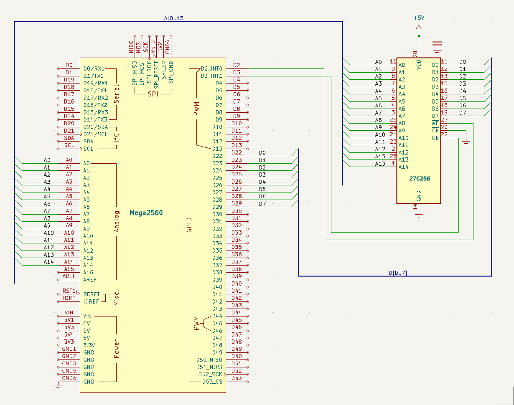
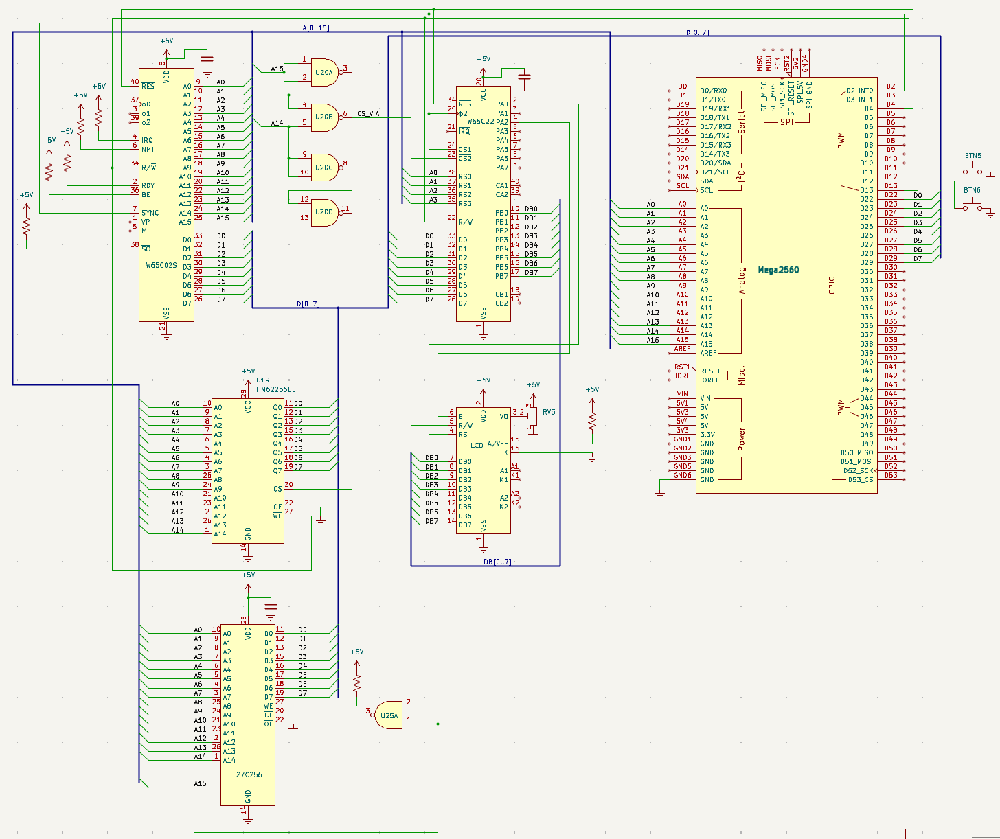

EEPROM som ROM
Mål
Hittills har Arduino levererat 6502-programmet — varje gång CPU:n läser från $8000 och uppåt är det Arduinons minnesarray som svarar. Det fungerar utmärkt, men en riktig dator har sitt program i ROM — icke-flyktigt minne som överlever strömavbrott. Nu tar vi det sista stora klivet: vi bränner in programmet på en AT28C256 EEPROM och låter den ersätta Arduino som ROM.
En andra Arduino Mega används som EEPROM-programmerare. Via USB tar den emot en .bin-fil från datorn, bränner den på AT28C256, och verifierar att varje byte sitter rätt. Sedan flyttar du EEPROM-chippet till datorns kopplingsdäck — och datorn startar direkt från äkta ROM, precis som en Commodore 64 eller Apple II.
Arduinon på kopplingsdäcket finns kvar som klocka och diagnostikverktyg — men datorn överlever utan den. Slå på strömmen, och CPU:n läser ditt program direkt ur EEPROM:et. Det här är en fristående dator.
Nya komponenter
En AT28C256 EEPROM på 32 KB blir datorns ROM, en extra Arduino Mega agerar programmerare som bränner programmet, en extra 74HC00 avkodar $8000–$FFFF för EEPROM:et, och en kondensator avkopplar strömmen. Efter detta steg kan datorn starta helt utan Arduino.
| Antal | Komponent | Används till |
|---|---|---|
| 1 | AT28C256 (32KB EEPROM, DIP-28) | Programminne — ersätter Arduino för $8000–$FFFF |
| 1 | Arduino Mega 2560 (extra) | EEPROM-programmerare — används endast vid bränning |
| 1 | 74HC00 (extra) | Adressavkodning för EEPROM — /CE vid $8000–$FFFF |
| 1 | 100 nF keramisk kondensator | Avkoppling vid EEPROM:ets VCC/GND |
| — | Kopplingstråd | Adress, data, kontroll |
AT28C256 — pinout
DIP-28-kapsel. 15 adresslinjer, 8 datalinjer, 3 kontrollsignaler. Nästan identisk med 62256 SRAM men med /WE som styr bränning och RDY/BUSY som signalerar när bränningen är klar (vi använder en enkel timeout istället).
■ Adressbuss ■ Databuss ■ Kontroll ■ Ström. Notch/pin 1-markering: uppåt.
Kopplingsschema — programmeraren
Den andra Arduino Mega kopplas 1:1 till AT28C256. Här finns inga andra kretsar — bara Arduino, EEPROM, och 100Ω skyddsmotstånd på databussen. När bränningen är klar kopplas allt isär.

Kopplingsschema — datorn med EEPROM
EEPROM:et sitter nu på datorns adress- och databuss tillsammans med SRAM, VIA och Arduino. En extra 74HC00 avkodar A15 till /CE — EEPROM:et aktiveras vid $8000–$FFFF.

Kopplingar
Först programmeraren — en enkel 1:1-koppling. Sedan datorn — fyra enheter på samma buss.
Programmeraren — Arduino till AT28C256
| Signal | Arduino | AT28C256 | Varför |
|---|---|---|---|
| VDD, VSS | 5V, GND | VDD (28), VSS (14) | Strömmatning — glöm inte 100nF avkoppling |
| A0–A7 | A0–A7 (PORTF) | A0–A7 | Låga adressbyte — vilken byte som ska brännas |
| A8–A14 | A8–A14 (PORTK) | A8–A14 | Höga adressbyte — 15 bitar = 32 768 adresser |
| D0–D7 | D22–D29 (PORTA) | D0–D7 via 100Ω | Data — samma portregister som alltid |
| /WE | D2 | /WE (27) | Write Enable — pulsas LÅG för att bränna |
| /OE | D3 | /OE (22) | Output Enable — LÅG vid läsning/verifiering |
| /CE | GND | /CE (20) | Chip Enable — alltid aktiv under programmering |
Datorn — EEPROM på bussen
| Pin | Signal | Ansluts till | Varför |
|---|---|---|---|
| 28, 14 | VDD, VSS | +5V, GND | Strömmatning |
| 1–10, 21–26 | A0–A14 | CPU A0–A14 | Delad adressbuss med SRAM, VIA, Arduino |
| 11–13, 15–19 | D0–D7 | CPU D0–D7 via 100Ω | Delad databuss |
| 20 | /CE | 74HC00-utgång | Aktiveras vid $8000–$FFFF (A15=1) |
| 22 | /OE | GND | Alltid läs ut — EEPROM är read-only i datorn |
| 27 | /WE | +5V | Aldrig skriva — ROM-läge |
74HC00 — EEPROM-avkodning (ny grind)
En extra 74HC00 vid sidan av den från steg 7/9. En enda grind används som inverterare för A15.
A15 NAND A15 = NOT A15. EEPROM:ets /CE är aktiv LÅG. När A15=1 (adress $8000 eller högre) blir grindens utgång LÅG → EEPROM aktiverat. När A15=0 (under $8000) är utgången HÖG → EEPROM är bortkopplat, SRAM eller VIA tar över.
| Pin | Signal | Kopplas till | Varför |
|---|---|---|---|
| 1, 2 | A15 (in) | CPU A15 | Båda ingångarna till A15 → NAND = NOT A15 |
| 3 | NOT A15 (ut) | EEPROM /CE (pin 20) | LÅG när A15=1 → EEPROM aktivt vid $8000–$FFFF |
| 14 | VCC | +5V | Strömmatning |
| 7 | GND | GND | Systemjord |
Minneskarta
EEPROM:et tar över $8000–$FFFF från Arduino. Programmet ligger nu i äkta ROM.
Lila heldragen ram = AT28C256 EEPROM (ny). Grön = 62256 SRAM. Gul = VIA. Arduino svarar inte på några minnesadresser längre — bara klocka och diagnostik. Fyra enheter, en buss.
Arduino-kod — programmeraren
Det här programmet laddas upp på den andra Arduino Mega — den som tillfälligt kopplas in som EEPROM-programmerare. Koden är enkel: ta emot 32 768 bytes över serieporten, bränn dem på AT28C256, och verifiera. Programmet körs en gång i setup() och rapporterar resultatet — loop() är tom.
Hur bränning går till
AT28C256 har inbyggd själv-timing. För att bränna en byte sätter du adress och data, drar /WE låg, väntar minst 10 millisekunder (vi använder 10 för marginal), och drar /WE hög igen. Kretsen sköter resten internt. För att läsa tillbaka drar du /OE låg och läser PINA — precis som med SRAM.
Verifieringen läser tillbaka varje byte och jämför med originaldatan. Om något inte stämmer rapporteras adressen och de två värdena. Annars: "OK — 32768 bytes verifierade".
// ==============================================================
// Steg 10 — EEPROM-programmerare (andra Arduino Mega)
// ==============================================================
// Tar emot en .bin-fil över serieporten, bränner den på
// AT28C256, och verifierar. Körs EN gång i setup().
#include <Arduino.h>
// --- Pindefinitioner ---
#define WE 2 // Arduino D2 → AT28C256 /WE (pin 27)
#define OE 3 // Arduino D3 → AT28C256 /OE (pin 22)
#define EEPROM_SIZE 32768 // 32 KB = 32 768 bytes
// --- Buffert för mottagen data ---
// Arduino Mega har 8 KB SRAM — för lite för hela 32 KB.
// Vi använder därför ett sid-indelat protokoll: 256 bytes åt gången.
uint8_t page[256]; // 256-byte sida
int pages_total = 0; // Räkna antal mottagna sidor
// --- read_eeprom() — läs en byte från EEPROM ---
uint8_t read_eeprom(uint16_t addr) {
// Sätt adress
PORTF = addr & 0xFF; // A0–A7 (PORTF = Arduino A0–A7)
PORTK = (addr >> 8) & 0x7F; // A8–A14 (PORTK = Arduino A8–A14, bit 7 oanvänd)
DDRA = 0x00; // PORTA = INPUT (tri-state)
digitalWrite(OE, LOW); // /OE låg → EEPROM kör ut data
delayMicroseconds(1); // Vänta på utgångsdata
uint8_t data = PINA; // Läs D0–D7
digitalWrite(OE, HIGH); // /OE hög → EEPROM tri-state
return data;
}
// --- write_eeprom() — bränn en byte till EEPROM ---
// AT28C256 har inbyggd timing — vi behöver bara hålla /WE
// låg i minst 10 ms så sköter kretsen resten.
void write_eeprom(uint16_t addr, uint8_t data) {
// Sätt adress
PORTF = addr & 0xFF;
PORTK = (addr >> 8) & 0x7F;
// Sätt data
DDRA = 0xFF; // PORTA = OUTPUT
PORTA = data; // Lägg ut data på D0–D7
digitalWrite(OE, HIGH); // /OE hög — vi ska inte läsa nu
// Bränn: puls /WE låg i 10 ms
digitalWrite(WE, LOW);
delay(10); // 10 ms — gott om marginal
digitalWrite(WE, HIGH);
DDRA = 0x00; // Tri-state databussen
}
// --- setup() — ta emot data, bränn, verifiera ---
void setup() {
Serial.begin(115200);
pinMode(WE, OUTPUT); digitalWrite(WE, HIGH);
pinMode(OE, OUTPUT); digitalWrite(OE, HIGH);
DDRF = 0xFF; // Adress A0–A7 = OUTPUT
DDRK = 0xFF; // Adress A8–A14 = OUTPUT
DDRA = 0x00; // Data = INPUT (tri-state från start)
Serial.println("AT28C256 EEPROM-programmerare");
Serial.println("Redo att ta emot .bin-fil...");
Serial.println("Skicka data med: python3 upload_eeprom.py program.bin");
// --- Ta emot data sida för sida ---
// Protokoll: 256 bytes per sida. Efter sista sidan: "DONE".
uint16_t total_addr = 0;
pages_total = 0;
while (true) {
// Vänta på startsignal från Python-skriptet
while (Serial.available() < 1);
char cmd = Serial.read();
if (cmd == 'P') {
// "PAGE" — nästa 256 bytes är en sida
pages_total++;
int bytes_read = Serial.readBytes((char*)page, 256);
if (bytes_read != 256) {
Serial.print("FEL: endast ");
Serial.print(bytes_read);
Serial.println(" bytes mottagna (väntade 256)");
return;
}
// Bränn sidan
Serial.print("Bränner sida ");
Serial.print(pages_total);
Serial.print(" (adress $");
Serial.print(total_addr, HEX);
Serial.print(")... ");
for (int i = 0; i < 256; i++) {
write_eeprom(total_addr + i, page[i]);
}
Serial.println("OK");
total_addr += 256;
}
else if (cmd == 'D') {
// "DONE" — alla sidor mottagna
Serial.println("Alla sidor mottagna.");
break;
}
else {
Serial.print("Okänt kommando: ");
Serial.println(cmd);
}
}
// --- Verifiera ---
Serial.println("Verifierar...");
int errors = 0;
for (uint32_t addr = 0; addr < total_addr; addr++) {
// Vi har inte kvar originaldatan i RAM på ett enkelt sätt
// efter sidbränningen. I praktiken: använd ett Python-skript
// som skickar om datan för verifiering, eller lagra checksummor.
//
// Här visar vi principen: läs tillbaka och låt Python-skriptet
// jämföra.
uint8_t val = read_eeprom(addr);
Serial.print("V ");
Serial.print(addr, HEX);
Serial.print(" ");
Serial.println(val, HEX);
}
Serial.println("KLAR");
Serial.print("Totalt brända bytes: ");
Serial.println(total_addr);
}
void loop() {
// Tom — allt sker i setup()
}
Python-skript — skicka .bin-fil till programmeraren
Ett enkelt Python 3-skript som läser program.bin och skickar det sida för sida över serieporten. Kräver pyserial (pip install pyserial).
#!/usr/bin/env python3
"""upload_eeprom.py — skicka .bin-fil till AT28C256 EEPROM-programmerare."""
import serial
import sys
import time
PAGE_SIZE = 256
def upload(bin_path, port, baud=115200):
with open(bin_path, 'rb') as f:
data = f.read()
if len(data) > 32768:
print(f"FEL: {bin_path} är {len(data)} bytes — max 32768")
sys.exit(1)
print(f"Öppnar {port}...")
ser = serial.Serial(port, baud, timeout=5)
time.sleep(2) # Vänta på Arduino-reset
# Skicka sida för sida
total_pages = (len(data) + PAGE_SIZE - 1) // PAGE_SIZE
for i in range(total_pages):
start = i * PAGE_SIZE
end = min(start + PAGE_SIZE, len(data))
page = data[start:end]
# PADDA sista sidan till 256 bytes med 0xFF (tom EEPROM-byte)
if len(page) < PAGE_SIZE:
page = page + b'\xFF' * (PAGE_SIZE - len(page))
ser.write(b'P') # PAGE-kommando
ser.write(page) # 256 bytes data
ser.flush()
# Läs bekräftelse
response = ser.readline().decode().strip()
print(f"Sida {i+1}/{total_pages}: {response}")
# Signalera klart
ser.write(b'D') # DONE
ser.flush()
print("Klar! Väntar på verifiering...")
while True:
line = ser.readline().decode().strip()
if not line:
break
print(line)
ser.close()
print("Klart.")
if __name__ == '__main__':
if len(sys.argv) < 3:
print(f"Använd: {sys.argv[0]} program.bin /dev/ttyACM0")
sys.exit(1)
upload(sys.argv[1], sys.argv[2])
Arduino-kod — datorn
Koden på datorns Arduino förenklas dramatiskt. program[2048] och de hundratals write_mem()-anropen försvinner. Istället får vi en ny funktion is_eeprom() som returnerar true för adresser mellan $8000 och $FFFF. När CPU:n läser från dessa adresser tri-statar Arduino bussen — EEPROM:et svarar själv.
Arduinon är nu reducerad till klockgenerator, reset-kontroll och seriell diagnostik. Alla minnesarrayer utom vectors[6] är borta. Vektorn på $FFFA–$FFFF ligger sist i EEPROM-bilden — .segment "VECTORS" i assembler-koden placerar dem där.
Koden nedan är baserad på steg 9 men med is_eeprom() istället för program[]. read_mem() returnerar 0 för EEPROM-adresser — Arduino rör dem inte.
// ==============================================================
// Steg 10 — EEPROM som ROM
// ==============================================================
// Arduino är nu ENDAST klocka + reset + diagnostik.
// $8000–$FFFF hanteras av AT28C256 EEPROM.
// SRAM ($0000–$3FFF) och VIA ($4000–$400F) är oförändrade.
#include <Arduino.h>
#define PHI2 2
#define RESB 4
#define RWB 3
#define SYNC 13
#define BTN_CLK 11
#define BTN_INSTR 12
#define CLOCK_HZ 500
#define CLOCK_DELAY (1000 / (CLOCK_HZ * 2))
#define VIA_BASE 0x4000
#define SRAM_END 0x3FFF
#define EEPROM_START 0x8000
#define EEPROM_END 0xFFFF
// --- is_sram() — hanteras av fysisk 62256 ---
bool is_sram(uint16_t addr) { return addr <= SRAM_END; }
// --- is_via() — hanteras av fysisk W65C22 ---
bool is_via(uint16_t addr) {
return (addr >= VIA_BASE && addr < VIA_BASE + 16);
}
// --- is_eeprom() — hanteras av fysisk AT28C256 (NY!) ---
bool is_eeprom(uint16_t addr) {
return (addr >= EEPROM_START && addr <= EEPROM_END);
}
// --- read_mem() — Arduino svarar ENDAST utanför SRAM/VIA/EEPROM ---
uint8_t read_mem(uint16_t addr) {
if (is_sram(addr)) return 0; // SRAM svarar
if (is_via(addr)) return 0; // VIA svarar
if (is_eeprom(addr)) return 0; // EEPROM svarar (NY!)
return 0xEA; // Fallback: NOP
}
// --- write_mem() — spara, men bara utanför SRAM/VIA/EEPROM ---
void write_mem(uint16_t addr, uint8_t val) {
if (is_sram(addr)) return; // SRAM tar emot
if (is_via(addr)) return; // VIA tar emot
if (is_eeprom(addr)) return; // EEPROM är read-only (NY!)
}
// --- pulse() — en klockcykel, Arduino tri-state för SRAM/VIA/EEPROM ---
void pulse() {
digitalWrite(PHI2, LOW);
DDRA = 0x00;
delay(CLOCK_DELAY);
uint8_t kl = PINF;
uint8_t kh = PINK;
uint16_t a = (kl << 0) | (kh << 8);
bool rw = digitalRead(RWB);
// Arduino svarar ENDAST om adressen inte är SRAM, VIA eller EEPROM
if (rw && !is_sram(a) && !is_via(a) && !is_eeprom(a)) {
DDRA = 0xFF;
PORTA = read_mem(a);
}
digitalWrite(PHI2, HIGH);
delay(CLOCK_DELAY);
if (!rw && !is_sram(a) && !is_via(a) && !is_eeprom(a))
write_mem(a, PINA);
// Diagnostik
Serial.print(rw ? "R" : "W");
Serial.print(" $");
Serial.print(a, HEX);
if (is_sram(a)) Serial.print(" ← SRAM");
else if (is_via(a)) Serial.print(" ← VIA");
else if (is_eeprom(a)) Serial.print(" ← EEPROM");
else if (a == 0xFFFC) Serial.print(" ← RESET-VEKTOR LÅG (EEPROM)");
else if (a == 0xFFFD) Serial.print(" ← RESET-VEKTOR HÖG (EEPROM)");
Serial.println();
}
// --- setup() — inget program att ladda! ---
void setup() {
pinMode(RESB, OUTPUT); digitalWrite(RESB, LOW);
pinMode(PHI2, OUTPUT); digitalWrite(PHI2, LOW);
pinMode(SYNC, INPUT);
pinMode(BTN_CLK, INPUT_PULLUP);
pinMode(BTN_INSTR, INPUT_PULLUP);
pinMode(RWB, INPUT);
Serial.begin(115200);
DDRK = 0x00; DDRF = 0x00; DDRA = 0x00;
Serial.println("Steg 10 — EEPROM som ROM");
Serial.println("Programmet ligger i AT28C256 — inte i Arduino.");
// Reset-sekvens
digitalWrite(RESB, LOW);
for (int i = 0; i < 5; i++) pulse();
digitalWrite(RESB, HIGH);
Serial.println("CPU startad. EEPROM levererar programkoden.");
}
// --- loop() — knappstyrning som tidigare ---
void loop() {
if (!digitalRead(BTN_CLK)) {
delay(50); while (!digitalRead(BTN_CLK)); delay(50);
pulse();
}
if (!digitalRead(BTN_INSTR)) {
delay(50); while (!digitalRead(BTN_INSTR)); delay(50);
do { pulse(); } while (!digitalRead(SYNC));
}
// Utan knapptryck: kör fritt
pulse();
}
Exempel på körning
Fas 1 — bränna EEPROM
Bygg programmet med ca65 som vanligt, kör Python-skriptet för att bränna:
$ pio run -e step10 -t upload # Ladda upp dator-Arduinon $ python3 upload_eeprom.py asm/program_hello.bin /dev/ttyACM1 AT28C256 EEPROM-programmerare Redo att ta emot .bin-fil... Sida 1/8: Bränner sida 1 (adress $0000)... OK Sida 2/8: Bränner sida 2 (adress $0100)... OK ... Sida 8/8: Bränner sida 8 (adress $0700)... OK Alla sidor mottagna. Verifierar... KLAR Totalt brända bytes: 2054
Fas 2 — flytta EEPROM till datorn
Koppla bort programmerings-Arduinon. Flytta AT28C256-chippet till datorns kopplingsdäck och anslut enligt kopplingstabellen ovan. Slå på strömmen.
Seriemonitor — datorn startar
Steg 10 — EEPROM som ROM Programmet ligger i AT28C256 — inte i Arduino. CPU startad. EEPROM levererar programkoden. R $FFFC ← RESET-VEKTOR LÅG (EEPROM) R $FFFD ← RESET-VEKTOR HÖG (EEPROM) R $8000 ← EEPROM R $8001 ← EEPROM W $4002 ← VIA: FF W $4003 ← VIA: FF W $4000 ← VIA: 30 (LCD-init) ... W $4000 ← VIA: 3D (=) ...
LCD-displayen (16×2)
Varje gång du ser ← EEPROM i loggen är det AT28C256 som svarar — inte Arduino. Reset-vektorn på $FFFC/$FFFD ligger i EEPROM:ets sista bytes, inskrivna av assembler-kedjan. CPU:n läser dem, hoppar till $8000, och kör programmet direkt från äkta ROM.
Koppla bort Arduinon helt (ersätt klockan med en 555-timer eller kristalloscillator) så har du en helt fristående 6502-dator. Programmet överlever strömavbrott — slå på strömmen imorgon och det finns kvar, inbränt i kisel.
Om det inte fungerar
- CPU:n läser
$FFFC/$FFFDmen hoppar till fel adress? EEPROM:ets /CE är förmodligen inte rätt avkodat. Kontrollera att 74HC00-grinden får A15 på båda ingångarna och att utgången går till EEPROM pin 20. - Programmet körs inte alls? Kontrollera att /OE är kopplat till GND och /WE till +5V. Utan /OE låg kör EEPROM:et inte ut data.
- Bränningen misslyckas? Mät spänningen vid EEPROM:ets VDD — den måste vara minst 4.8V. Använd 12V DC-adapter till programmerings-Arduinon.
- Busskrockar? 100Ω motstånd på databussen är nu ännu viktigare — fyra enheter delar på samma 8 ledningar.
- Glöm inte avkopplingskondensatorn vid EEPROM:ets VDD/GND.